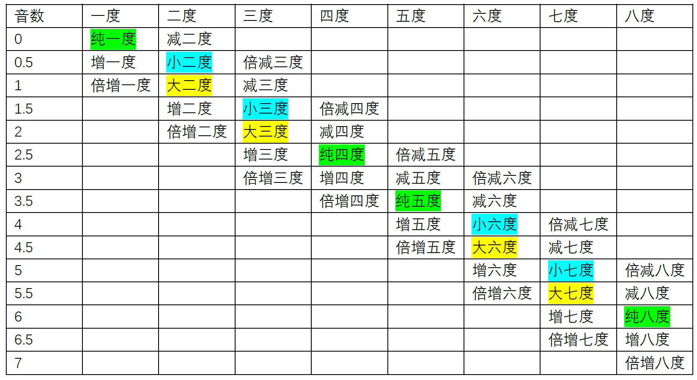
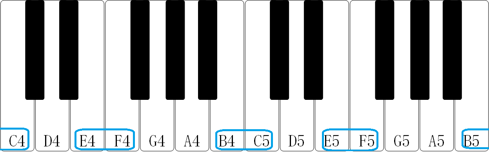

个人乐理自学笔记
本节内容参考自三分钟音乐社 《零基础学音乐·自学乐理第二季》 122-142节
音程
音程的概念
音程，即音与音的音高距离，如半音、全音（见“乐理笔记01-基础知识”）都是音程。
度数
两个音，忽略音名升降号（忽略钢琴黑键），只看音名的字母（只看钢琴白键），从低音到高音数有几个字母，就称几度。
如E4到A4经过了E4,F4,G4,A4四个字母，就称E4到A4有四度；
再如E4♭到A4♯，去掉升降号为E4与A4，仍然经过E4,F4,G4,A4四个字母，故E4♭到A4♯也是四度。
（这里F4到G4，G4到A4间有黑键F4♯与G4♯，但是要忽略黑键，因此F4♯与G4♯不计入度数）
根音与冠音
两个音中的低音是根音，高音是冠音。如E4与A4中的E4是根音，A4是冠音。
音数
表示两个音之间有多少个全音与半音。一个全音的音数为1，一个半音的音数为0.5，两个音的音数等于其间隔的全音数x1+半音数x0.5。
换一种说法，音数等于两个音之间的键数距离x0.5，这里的键包括白键与黑键。
如E4到A4间有一个半音(E4->F4)与两个全音(F4->G4,G4->A4)，故E4到A4的音数为2.5。
也可以数两个键的距离，E4->F4->F4♯->G4->G4♯->A4，显然E4到A4间是五个半音的距离，音数为2.5。
小二度、大二度、小三度、大三度、小六度、大六度、小七度、大七度
音数为0.5的二度称为小二度。
如C4到D4♭，两个音是半音（音数为0.5），度数是二度，故为小二度。
小二度的音数必为0.5，但音数为0.5不一定为小二度。如C4到C4♯（不是二度、是增一度）。
音数为1的二度称为大二度。
如C4到D4，两个音是全音（音数为1），度数是二度，故为大二度。
大二度的音数必为1，但音数为1不一定为大二度。如B4♯到D4（不是二度、是减三度）。
小三度、大三度、小六度、大六度、小七度、大七度见表1。
纯一度、纯八度、纯四度、纯五度
音数为0的一度称为纯一度（即两个相同的音）。如C4到C4。
一个音与其相邻组别的相同音名的距离是纯八度。如C4到C5。
纯四度是音数为2.5的四度，纯五度是音数为3.5的五度。
纯四度、纯五度见表1。
| 名称 | 定义 | 举例 |
|---|---|---|
| 纯一度 | 音数为0的一度 | C4到C4 |
| 小二度 | 音数为0.5的二度 | C4到D4♭ |
| 大二度 | 音数为1的二度 | C4到D4 |
| 小三度 | 音数为1.5的三度 | C4到E4♭ |
| 大三度 | 音数为2的三度 | C4到E4 |
| 纯四度 | 音数为2.5的四度 | C4到F4 |
| 纯五度 | 音数为3.5的五度 | C4到G4 |
| 小六度 | 音数为4的六度 | C4到A4♭ |
| 大六度 | 音数为4.5的六度 | C4到A4 |
| 小七度 | 音数为5的七度 | C4到B4♭ |
| 大七度 | 音数为5.5的七度 | C4到B4 |
| 纯八度 | 音数为6的八度 | C4到C5 |
增音程、减音程、倍增音程、倍减音程
二、三、六、七
由表1可知音数为1.5的三度为小三度，在1.5的基础上减0.5，得到音数为1的三度，被称为减三度，如C4到E4♭♭。
在1的基础上再减0.5，得到音数为0.5的三度，被称为倍减三度，如C4♯到E4♭♭。
同理，音数为2的三度为大三度，在2的基础上加0.5，得到音数为2.5的三度，被称为增三度，如C4到E4♯。
在2.5的基础上再加0.5，得到音数为3的三度，被称为倍增三度，如C4到E𝄪。
一、四、五、八
由表1可知音数为2.5的四度为纯四度，在2.5的基础上减0.5，得到音数为2的四度，被称为减四度，如C4到F4♭。
在2的基础上再减0.5，得到音数为1.5的四度，被称为倍减四度，如C4♯到F4♭♭。
同理，在2.5基础上加0.5，得到音数为3的四度，被称为增四度，如C4到F4♯。
在3的基础上再加0.5，得到音数为3.5的四度，被称为倍增四度，如C4到F4𝄪。
| 二三六七度 | 倍减X度 | 减X度 | 小X度 | 大X度 | 增X度 | 倍增X度 |
| 音数 | Y-1.5 | Y-1 | Y-0.5 | Y | Y+0.5 | Y+1 |
| 一四五八度 | 倍减X度 | 减X度 | 纯X度 | 增X度 | 倍增X度 | |
| 音数 | Y-1 | Y-0.5 | Y | Y+0.5 | Y+1 |

等音程
音数相等的音程被称作等音程。如减三度、大二度、倍增一度互为等音程，它们的音数都是1。
全音与半音
所有音数为0.5的音程（增一度、小二度、倍减三度）都是半音，所有音数为1的音程（减三度、大二度、倍增一度）都是全音。
三全音
所有音数为3的音程（倍增三度、增四度、减五度、倍减六度）都是三全音，倍增与倍减的情况较为罕见，因此三全音通常指的是增四度或减五度。
三全音的听觉感受极不协和。
识别音程的方法
不含升降号的情况
使用钢琴键可以更好的判断音程。钢琴键如下图所示，首先把钢琴中所有的EF、BC圈出，因为E到F、B到C是半音，它们中间没有黑键。

一度音程（或八度音程）不用判断，肯定是纯一度（或纯八度），如C4到C4（或C4到C5）。
对于二度音程，如果是E-F、B-C，那就是小二度。其他情况（C-D、D-E、F-G、G-A、A-B）就是大二度。
对于三度音程，三度中包含EF或BC时音数会小一些，是小三度（D-F、E-G、A-C、B-D）。不包含EF或BC时音数会大一些，是大三度（C-E、F-A、G-B）。
对于四度音程，EF或BC中包含一个时是纯四度（C-F、D-G、E-A、G-C、A-D、B-E）。EF或BC都不包含时是增四度（F-B）。
对于五度音程，EF或BC中包含一个时是纯五度（C-G、D-A、E-B、F-C、G-D、A-E）。EF或BC都包含时是减五度（B-F）。
对于六度音程或七度音程，EF或BC中包含一个时是大六度/七度，EF或BC都包含时是小六度/七度。
不含升降号的情况下，识别音程的方法可总结为表4，如下所示：
| 名称 | 不包含 | 包含一个 | 包含两个 |
|---|---|---|---|
| 一度 | 纯一度 | ||
| 二度 | 大二度 | 小二度 | |
| 三度 | 大三度 | 小三度 | |
| 四度 | 增四度 | 纯四度 | |
| 五度 | 纯五度 | 减五度 | |
| 六度 | 大六度 | 小六度 | |
| 七度 | 大七度 | 小七度 | |
| 八度 | 纯八度 |
含升降号的情况
先去掉升降号，判断出音程后，根据升降号确定音数是变大了还是变小了，进而得到最后的音程。
如要判断E4♭♭到C5♯的音程，首先知道E4到C5是六度，其间包含两个EF或BC，因此是小六度。
E4到C5♯相较于E4到C5音数要大0.5，因此E4到C5♯是大六度。
E4♭♭到C5♯相较于E4到C5♯音数要大1，因此E4♭♭到C5♯是倍增六度。
超过八度的音程
先确定两个音的度数，再将两个音放在八度以内，判断八度以内的音程，来确定音程度数前面的前缀。
如C4到E5是十度，将其放到同一个八度，即C4到E4，C-E是三度，且不包含EF或BC，是大三度。保留大三度的前缀“大”，因此C4到E5是大十度。
再如D3到G6♯是二十五度，将其放到同一个八度，即D3到G3♯，D-G是四度，且包含一个EF，因此是纯四度，D3到G3♯相较于D3到G3多0.5个音数，因此是增四度，保留增四度的前缀“增”，因此D3到G6♯是增二十五度。
单音程与复音程
有两种定义。定义一认为度数小于等于8为单音程，度数大于八为复音程；定义二认为实际距离小于等于纯八度的距离（音数小于等于6）为单音程，反之为复音程。
倍增七度、增八度、倍增八度在定义一中为单音程，定义二中为复音程；
减九度、倍减九度在定义一中为复音程，定义二中为单音程。
音程名字的简写
主要的音程前缀有——大(Major)、小(minor,m为小写)、增(Augmented)、减(Diminished)、纯(Perfect或Pure)。（倍增与倍减不常见）
简写时就采用前缀首字母+数字的形式，如大三度记为M3，小七度记为m7，增五度记为A5。
亦可用Major与minor形容调式，如C大调记为C Major，D小调记为D minor。
旋律音程与和声音程
两个音先后弹奏时，称为旋律音程。
两个音同时弹奏时，称为和声音程。
自然音程与变化音程
在“自然大小调音阶”里直接存在的音程称为自然音程。可以由两个白键形成的音程称为自然音程。所有在表4中出现的音程都是自然音程。
在“自然大小调音阶”里不存在的音程称为变化音程，要通过临时升降音产生变化而形成。自然音程之外的音程称为变化音程。
如C4♯到F4♯是纯四度，纯四度在表4中能找到，因此C4♯与F4♯形成的是自然音程。
再如C4到A4♯是增六度，增六度在表4中找不到，说明增六度不是能由两个白键形成的音程，因此C4到A4♯形成的是变化音程。
超过八度的音程，将两个音放在八度以内，判断八度以内的音程能否在表4中找到，从而判断其是自然音程还是变化音程。
协和音程与不协和音程
协和音程分为三种：
①极完全协和音程——纯一度、纯八度...纯(1+7n)度（n为整数且n≥0）
②完全协和音程——纯四度、纯五度...纯(4或5+7n)度（n为整数且n≥0）
③不完全协和音程——大三度、小三度、大六度、小六度...大或小(3或6+7n)度（n为整数且n≥0）
协和音程之外的音程称为不协和音程：
大二度、小二度、大七度、小七度...大或小(2或7+7n)度（n为整数且n≥0）
所有增音程、减音程、倍增音程、倍减音程。
C4到A4♭是小六度，是不完全协和音程，而C4到G4♯是增五度，是不协和音程。虽然A4♭与G4♯是等音，小六度与增五度是等音程，C4到A4♭与C4到G4♯在弹奏时的音高完全相同，但它们所处的音乐语境不同，即在一段连续的音乐中，通过与其他声音，其他和弦，其他音程的对比，所体现出的协和程度是不一样的。
音程转位
转位指改变两个音的高低顺序。如C4到E4，可以转位得到E4到C5、E3到C4、E4到C6、E5到C6等等（只要是E-C就行）。而通常情况下转位得到的是E4到C5、E3到C4（原位中的一个音不动，转位后在八度以内）。
可以根据原位的音程名字，推出转位后的音程名字。音程名字前缀对应关系为：大↔︎小、纯↔︎纯、增↔︎减、倍增↔︎倍减。原位的音数大于0且小于6时，原位与转位的音程度数之和为9。如C4-D4是大二度，其转位D4-C5是小七度。
原位的音数等于0或大于6时，不满足“原位与转位的音程度数之和为9”这一规律。如纯一度的转位仍为纯一度，纯八度的转位仍为纯八度。增七度的转位为减九度（如D4♭到C5♯为增七度，其转位C3♯到D4♭为减九度。其转位不是C4♯到D4♭，是因为C4♯与D4♭等音，而转位要求两个音的高低顺序彻底改变）。
原位音程与转位音程的各类性质（自然音程还是变化音程，协和音程还是不协和音程）不会改变。
如C4到F4𝄪是倍增四度，其转位F4𝄪到C5是倍减五度。倍增四度与倍减五度都是变化音程，不协和音程。
度数大于八的音程，先缩小到八度以内，再转位。